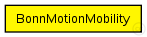
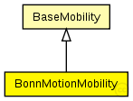

This documentation is released under the Creative Commons license
This documentation is released under the Creative Commons licenseC++ definition: click here
Uses the native file format of BonnMotion (http://www.cs.uni-bonn.de/IV/BonnMotion/).
The file is a plain text file, where every line describes the motion of one host. A line consists of one or more (t, x, y) triplets of real numbers, like:
t1 x1 y1 t2 x2 y2 t3 x3 y3 t4 x4 y4 ...
The meaning is that the given node gets to (xk,yk) at tk. There's no separate notation for wait, so x and y coordinates will be repeated there.
Author: Andras Varga
The following diagram shows usage relationships between types. Unresolved types are missing from the diagram. Click here to see the full picture.
The following diagram shows inheritance relationships for this type. Unresolved types are missing from the diagram. Click here to see the full picture.
| BaseMobility (simple module) |
Module which is responsible for mobility related information like position and movement BaseMobility itself defines a static mobility pattern (means only a position, no movement). Mobility modules which extend from this module willd efien more complex movement patterns. |
| Name | Type | Default value | Description |
|---|---|---|---|
| notAffectedByHostState | bool | true | |
| coreDebug | bool |
debug switch for the core framework |
|
| x | double |
x coordinate of the nodes' position (-1 = random) |
|
| y | double |
y coordinate of the nodes' position (-1 = random) |
|
| z | double |
z coordinate of the nodes' position (-1 = random) |
|
| debug | bool |
debug switch |
|
| traceFile | string |
the BonnMotion trace file |
|
| nodeId | double |
selects line in trace file; -1 gets substituted to parent module's index |
|
| updateInterval | double |
time interval to update the hosts position (in seconds) |
| Name | Value | Description |
|---|---|---|
| class | BonnMotionMobility |
// // Uses the native file format of BonnMotion (http://www.cs.uni-bonn.de/IV/BonnMotion/). // // The file is a plain text file, where every line describes the motion // of one host. A line consists of one or more (t, x, y) triplets of real // numbers, like: // // t1 x1 y1 t2 x2 y2 t3 x3 y3 t4 x4 y4 ... // // The meaning is that the given node gets to (xk,yk) at tk. There's no // separate notation for wait, so x and y coordinates will be repeated there. // // @author Andras Varga // simple BonnMotionMobility extends BaseMobility { parameters: @class(BonnMotionMobility); bool debug; // debug switch string traceFile; // the BonnMotion trace file double nodeId; // selects line in trace file; -1 gets substituted to parent module's index double updateInterval @unit(s); // time interval to update the hosts position (in seconds) }
This documentation is released under the Creative Commons license